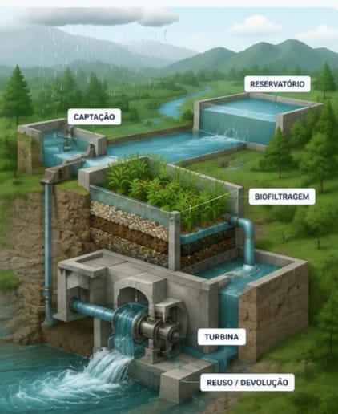
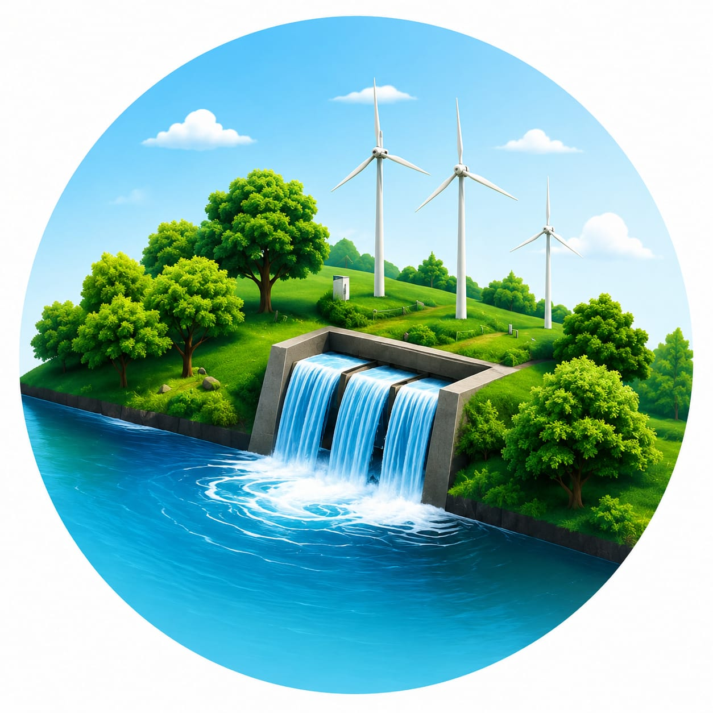

Mini Hidrelétrica com Sistema de Biofiltragem
A água da chuva e dos cursos naturais é coletada e armazenada em reservatórios para utilização no sistema.
A água passa por camadas de areia, pedras, carvão ativado e plantas aquáticas que ajudam a remover impurezas naturalmente.
Após a filtragem, a água movimenta uma turbina hidráulica que gera eletricidade limpa e renovável.
A água tratada pode ser reutilizada para irrigação, limpeza ou devolvida ao ambiente com qualidade.

| Potência estimada | 500 kW |
| Vazão do sistema | 2,5 m³/s |
| Queda d'água | 20 metros |
| Capacidade do reservatório | 10.000 m³ |
| Tipo de turbina | Kaplan |
| Sistema de filtragem | Areia, pedras, carvão ativado e plantas aquáticas |
